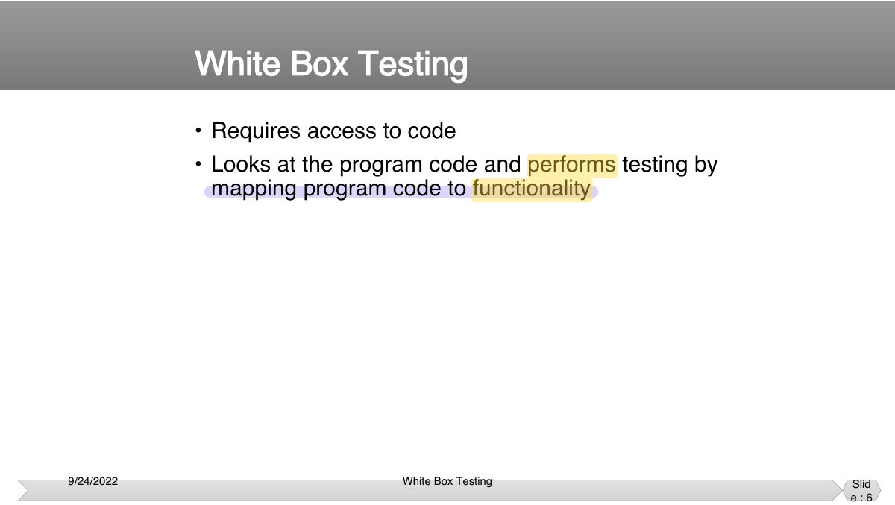
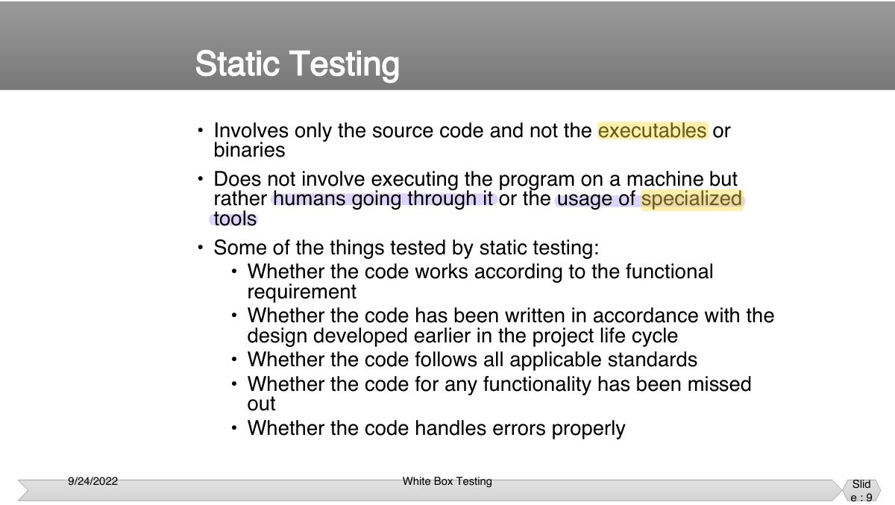
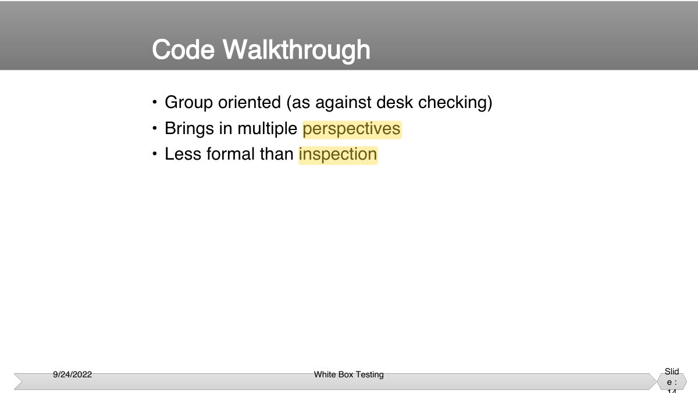
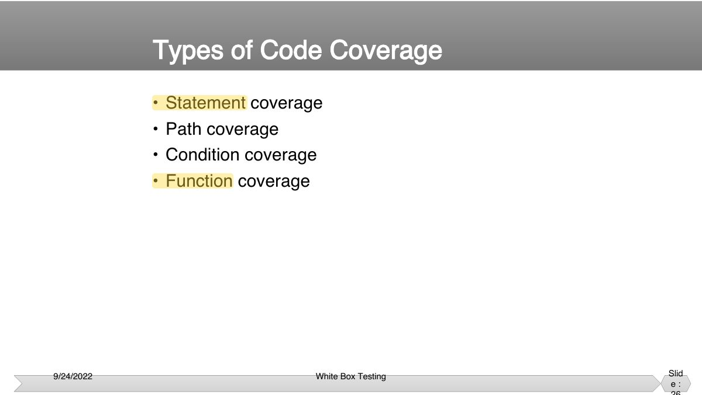
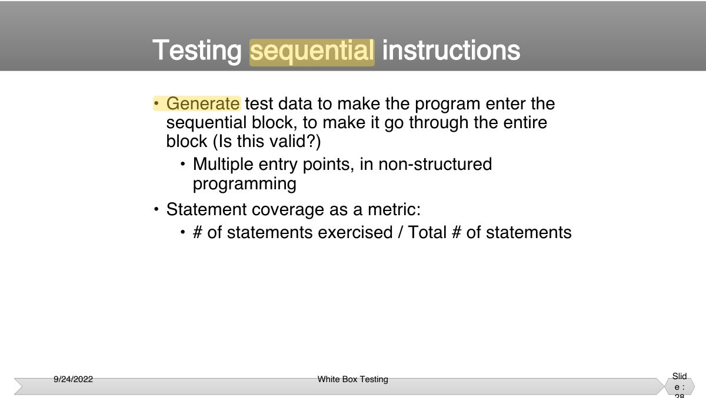
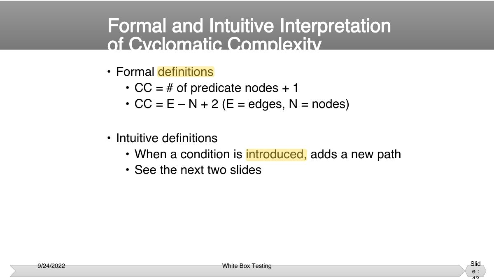

In a formal inspection, who leads the meeting and keeps it on track?
White-Box Testing
Static white-box testing (desk checking, walkthroughs, formal inspections and their roles) and dynamic white-box testing: statement, path, branch/decision, condition and decision/condition coverage, basis path testing with flow graphs and cyclomatic complexity.
How to read this page
Every original slide is shown unchanged. Yellow marks on a slide point to a numbered note: hover or tap a mark to jump to its note, and hover a note to see its marks. Questions tagged Past exam appeared on a real paper; Prediction questions are likely angles, not confirmed. Pick an answer to each question: a wrong pick tells you why it is wrong, so you can try again.
All 72 slides
- 1 Slide 1
- 2 • To focus on white box testing • To distinguish between different types of white box
- 3 The slide
- 4 V design the
- 5 Should i memorize
- 6 • Requires access to code • Looks at the program code and performs testing by
- 7 • The program code truly represents what the program actually does and not just what it is intended to do!
- 8 Types of White Box Testing
- 9 • Involves only the source code and not the executables or binaries
- 10 • Humans can find errors that computers can’t. • Multiple humans can provide multiple perspectives.
- 11 • Different types • Desk checking of the code
- 12 • Author informally checks the code against the specifications and corrects defects found.
- 13 • Advantages • The programmer knows the code and programming
- 14 • Group oriented (as against desk checking) • Brings in multiple perspectives
- 15 • Group-oriented activity • Highly formal and structured
- 16 • Author • Author of the work product • Makes available the required material to the reviewers
- 17 • Typical documents circulated: • Program code
- 18 • Preliminary meeting (optional) • Author explains his / her perspective
- 19 do
- 20 • Prioritizing various programs • High priority / important codes subject to formal
- 21 Help identify / are used:
- 22 • “Never leave home without it!” • The code review checklist aids in organizational
- 23 • Done by running the executable on the machine • Entails running the product against some predefined
- 24 • Initial quick checks by developer • Removes “obvious” errors
- 25 • Exercises different parts of code • Maps parts of code to required functionality
- 26 • Statement coverage • Path coverage
- 27 de
- 28 • Generate test data to make the program enter the sequential block, to make it go through the entire
- 29 • Have data to test the THEN part • Have data to test the ELSE part
- 30 • There should be test cases that:
- 31 • Even if we were to achieve a very high level of statement coverage, it does not mean that the program is defect-free.
- 32 • Statement Coverage may not indicate “true coverage” • Path Coverage provides better representation
- 33 Slide 33
- 34 • Further refinement of path coverage • Makes sure each constituent condition in a boolean
- 35 • Finds how many functions are covered by test cases • Higher level of abstraction; hence possible to achieve
- 36 • Performance analysis and optimization • Resource usage analysis
- 37 • Which of the paths are independent? (If paths are not independent, we may be able to minimize the number
- 38 • Start with a conventional flow chart. • Identify the “decision points.”
- 39 Slide 39
- 40 • Start with a conventional flow chart.
- 41 Flow Diagram for Conventional Flow Chart Calculating Complexity
- 42 • Formal definitions • CC = # of predicate nodes + 1
- 43 Case (i): A hypothetical program with no decision node
- 44 Case (ii): Adding one decision node
- 45 • An independent path is a path in the flow graph that has not been traversed before in other paths.
- 46 Meaning and Interpretation of Cyclomatic Complexity
- 47 • Developers “not finding time for testing” • They develop blind spots for their own defects
- 48 the
- 49 • It is concerned with the degree to which test cases exercise or cover the logic of source code of the program
- 50 void foo(int a, int b, int x) {
- 51 All possible Paths
- 52 • A set of test cases that traverses every statement at least once.
- 53 • A stronger logic-coverage criterion than the statement coverage.
- 54 Decision Coverage (Cont’d)
- 55 coverage
- 56 • Exceptions
- 57 Decision Coverage
- 58 Problems!
- 59 Condition Coverage
- 60 Condition Coverage
- 61 • Four conditions
- 62 • Condition coverage test cases must cover the following:
- 63 • Condition coverage test cases must cover the following:
- 64 • Another set of condition-coverage test cases A B X
- 65 Solution! Decision/Condition Coverage
- 66 decisions and conditions
- 67 • We write sufficient test cases so that all possible combinations of condition outcomes in each decision and all points of entry are exercised at least once
- 68 • In Figure the following, we need to write test cases that cover the following outcome
- 69 • The following test cases cover all eight possibilities:
- 70 NOTFOUND=TRUE; DO I=1 to TABSIZE WHILE (NOTFOUND); /*SEARCH TABLE*/ ...searching logic...; END
- 71 • You would need eight test cases for the following decision:
- 72 • For programs containing only one condition per decision, a minimum test criterion is a sufficient number of test cases to
• Requires access to code • Looks at the program code and performs testing by

Notes
-
White-box (structural) testing needs access to the code; tests are derived from its structure.
• Involves only the source code and not the executables or binaries

Notes
-
Static testing: examine code without running it (reviews, walkthroughs, inspections, static analysis).
• Group oriented (as against desk checking) • Brings in multiple perspectives

Notes
-
Formal inspection: author, moderator, reader, recorder/scribe, inspectors; preparation, meeting, rework, follow-up.
Exam angle
• Statement coverage • Path coverage

Notes
-
Coverage criteria from weak to strong: statement → branch/decision → condition → decision/condition → multiple-condition → path.
• Generate test data to make the program enter the sequential block, to make it go through the entire

Notes
-
Statement coverage: every statement executed at least once. Weak: can miss the false branch of an if.
-
Trap 100% statement coverage does NOT imply 100% branch coverage; 100% branch coverage DOES imply 100% statement coverage.
Exam angle
100% decision (branch) coverage guarantees 100% statement coverage.
100% statement coverage guarantees 100% decision coverage.
-
An if without else can be fully covered by one true case.
• Formal definitions • CC = # of predicate nodes + 1

Notes
-
Cyclomatic complexity V(G) = E − N + 2 = decision nodes + 1 = number of independent paths (minimum tests for basis path coverage).
Exam angle
A flow graph has 11 edges and 9 nodes. V(G) =
-
11 − 9 + 2.
• Four conditions
Notes
-
Condition coverage: every individual condition in a decision takes both true and false. Doesn’t guarantee decision coverage.
Solution! Decision/Condition Coverage
Exam angle
For "if (A && B)", tests (A=T, B=F) and (A=F, B=T) achieve:
-
Both make the decision false.